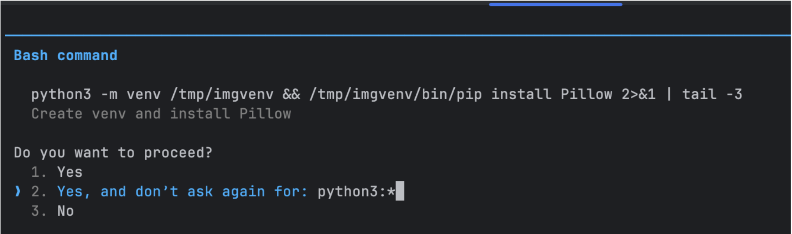
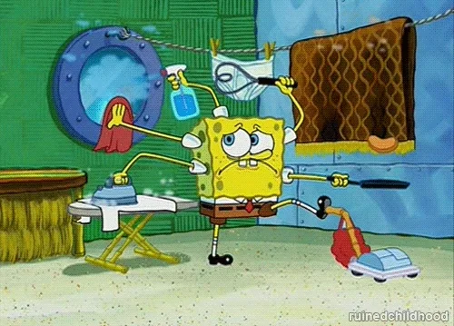

Inner
What you do at your desk. Tight cycle, fast feedback.
Outer
Group validation. Slower, collaboration is required.
This is where you learned the system. Its architecture and inner workings.
Collaboration lives here.
Merge conflicts, team decisions, ADRs.
// Automating the inner loop
Agent Harness.
A wrapper around an LLM that executes code → build → test → debug for you. Faster, but generic — it doesn't know your system.
Same shape across every vendor: Claude Code, Codex, OpenCode, etc. The plumbing differs; the loop is the same.

01
A new craft — and most of us are bad at it.
02
The keystrokes scale; the judgment doesn't.
03
The inner loop that taught me the system — gone.
Real leverage
Four cycles running while you think. That's real.

// How do we make coding agents actually work?
Claude Code -> Declarative Agents Definitions (YAML) -> Frameworks (Langchain)
"Yes, and don't ask again." Agent have full autonomy to do what the want.
Shared agent sessions with humans.
Understand what they are doing, how much did they cost and how much time they spent.
Now you're in charge of a distributed multi-agent system.
// You cannot skip levels
Did the agent have the right context to work with Specs, contracts, evals?
Collect data, measure and make your agents learn over time.